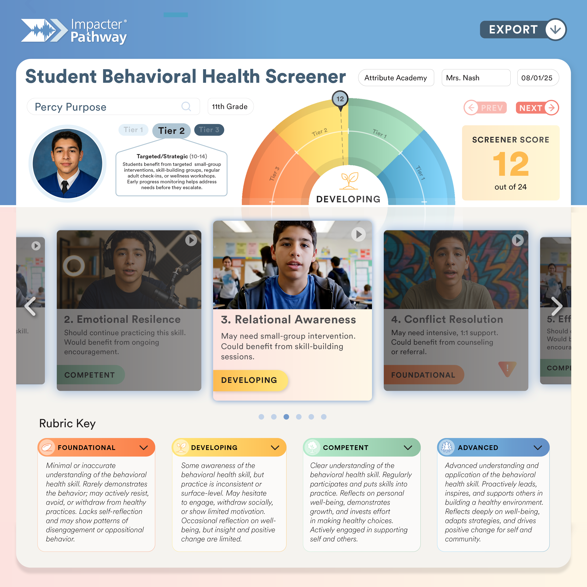
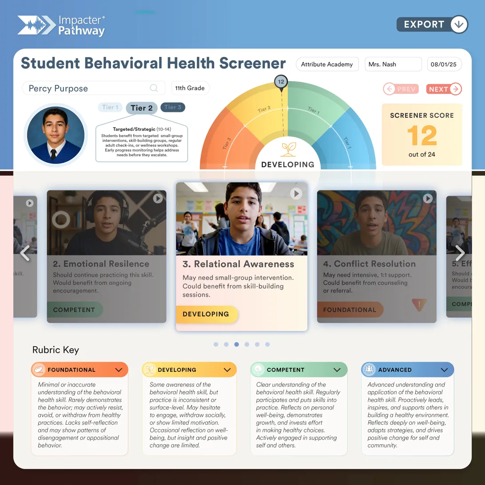
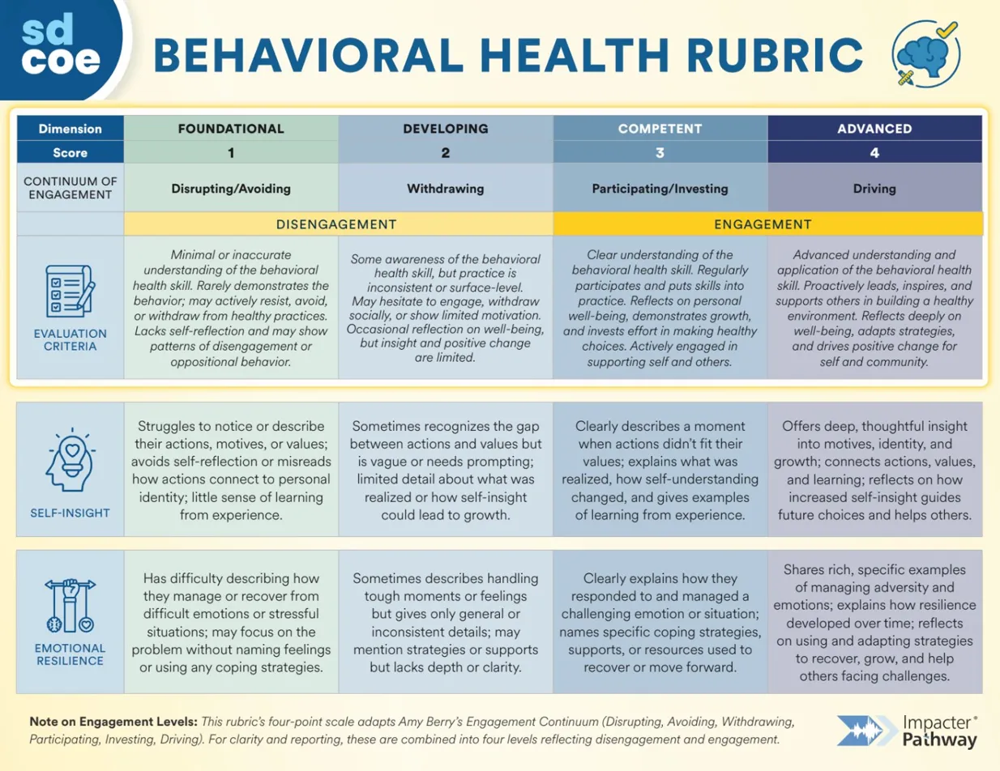
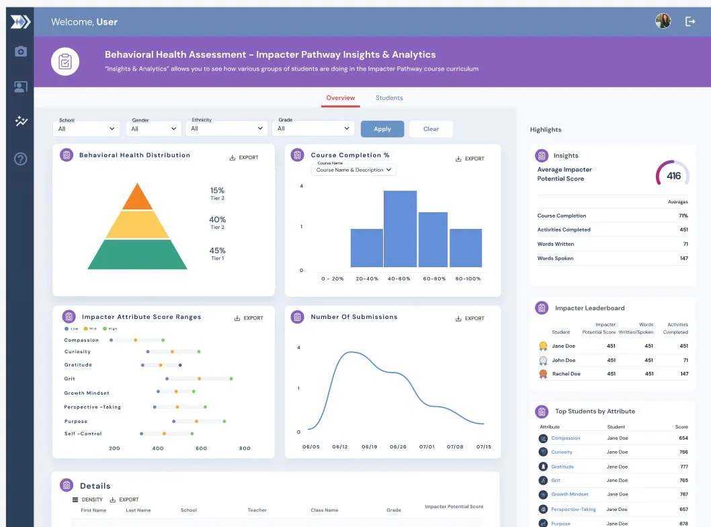
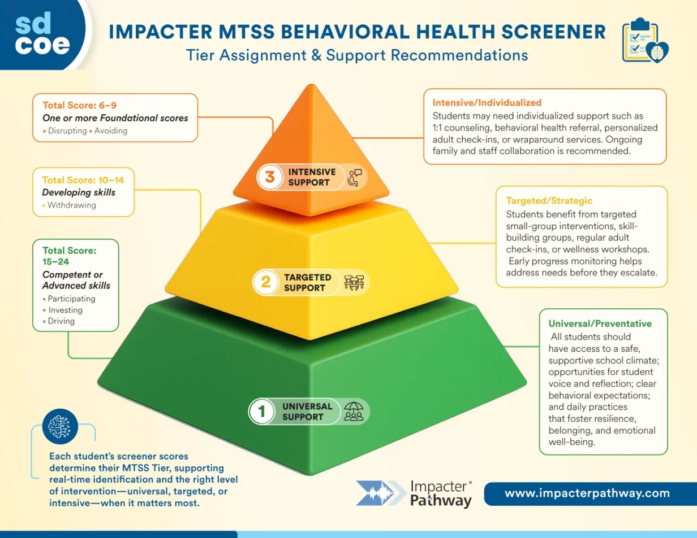
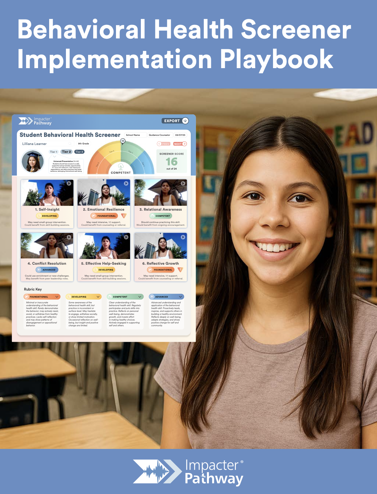

IMPACTER replaces checkbox SEL screeners with real student conversation — rubric-aligned ML scoring, MTSS-ready in one session, and reimbursed at scale through California's CYBHI fee schedule.

California's Behavioral Health Services Oversight & Accountability Commission selected IMPACTER's screener for statewide BHSSA evaluation — placing authentic-voice methodology at the center of California's behavioral health policy infrastructure.

Every prompt is scored 1–4 against a validated engagement rubric. Total out of 24 across six domains. Tier mapping is automatic.
No engagement with the prompt. Routes to immediate counselor outreach where score patterns indicate concern.
Minimal personal narrative. Likely Tier 2 territory — needs follow-up to determine support needs.
Student names a real situation, emotion, or strategy. Tier 1 universal supports — student is using internal resources.
Student demonstrates self-insight, reframes, or names ongoing growth. Tier 1 — strength-based support and peer-leadership pathways.
Forced-choice surveys collapse a student's actual experience into a number that no counselor can act on. The middle of the scale is where the truth gets buried.

"I tend to stay in my comfort zone and stand behind the yellow caution tape."
Three signals. Six domains.
Emotional Resilience Self-Insight Reflective Growth
One spoken response yields a rubric-aligned score, three detected behavioral health signals, and an MTSS tier recommendation — before the student stands up.
Tier 1 — universal support.
Strength-based reflection.
Optional peer-mentor pathway.
California's multi-payer fee schedule turns behavioral health screening from a budget line into a sustainable funding mechanism.
CPT Code 96127 with diagnosis Z13.89 through CYBHI's multi-payer fee schedule — reimbursed in full through third-party administrators.
Full reimbursement means the screening pays for itself. At scale, universal screening generates surplus revenue rather than consuming budget.
School Psychologists, Social Workers, and Counselors — administer and generate reimbursement. No new hires required.
Eligible practitioners administer the screener; districts receive full reimbursement through third-party administrators.
View official CYBHI fee schedule →Open-ended, spoken-language prompts — no Likert, no checkboxes. Developed with South County SELPA through SDCOE. Each prompt targets one of six behavioral health domains.
Audio and video responses are auto-transcribed and scored by IMPACTER's proprietary ML pipeline against a four-point engagement rubric. Total score out of 24, with immediate MTSS tier assignment — no lag, no manual review required.
Each score maps automatically to an MTSS tier with specific recommended next steps. Tier 3 flags route directly to counselors. No bottleneck between screening and support connection.
Counselors and site admins access a dashboard surfacing all screener results, individual and aggregate trends, flagged responses for urgent review, and tier recommendations with suggested actions.




NC Portrait Assessment — Adaptability competency. Watch the transcript sync word-for-word as she speaks, and watch the model surface three behavioral health signals no survey could capture.
"My biggest failure would be not taking enough risk to experience true failure."
The model flags this as a resilience marker: failure is recast as an unmet aspiration — not a catastrophe. There is no self-blame. The causal arrow runs forward, not backward.
"I tend to stay in my comfort zone and stand behind the yellow caution tape."
A spontaneous, original metaphor for her own avoidance behavior. The encoder isn't looking for keywords — it's looking for the naming precision that signals genuine self-awareness.
"Every day I'm trying to expand the barriers of my comfort zone…"
Present-tense growth orientation fused with a desire to increase risk exposure. She isn't describing past growth — she's narrating an active, ongoing process.
Click any prompt to see how IMPACTER captures student perspectives through conversation — not clinical questionnaires.
Recognizing self, naming choices, describing growth.
↗ Emotional ResilienceNaming emotions, coping strategies, perseverance.
↗ Relational AwarenessNoticing change in relationships, demonstrating empathy.
↗ Conflict ResolutionTaking responsibility, practicing repair, persistence.
↗ Help-SeekingKnowing when to ask for help and using available supports.
↗ Reflective GrowthDescribing personal growth, identifying change, setting goals.
↗Every recommendation comes from real implementation experience — not theoretical frameworks.

From homeroom block sessions to mobile carts to family-assisted remote — every model is documented with logistics, scripts, and 30-minute quick-launch instructions that work in real schools.
Download playbook (PDF) →Universal coverage in 20–30 min.
Pop-up flexibility, K–12.
Quiet, controlled environment.
Support / IEP-friendly.
Personalized care.
Home connection.
22 pages. All 7 deployment models, 30-min quick-launch blueprint, accessibility supports, student framing scripts.
The complete behavioral health screener — built, deployed, and ready for district partners to experience today.
Official DHCS document — CPT 96127 rates and scope of services.
Watch a student respond to the Purpose prompt. Real voice. Real scoring.
Full pilot report — results, trends, district-level insights. Email for access.
Direct line to Team IMPACTER — pilots, contracts, partnerships.
Your students have something important to say. IMPACTER creates the conditions where they can say it — and the infrastructure to act on what you hear.